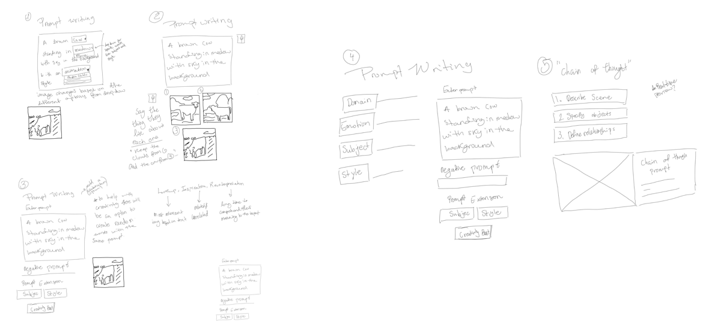
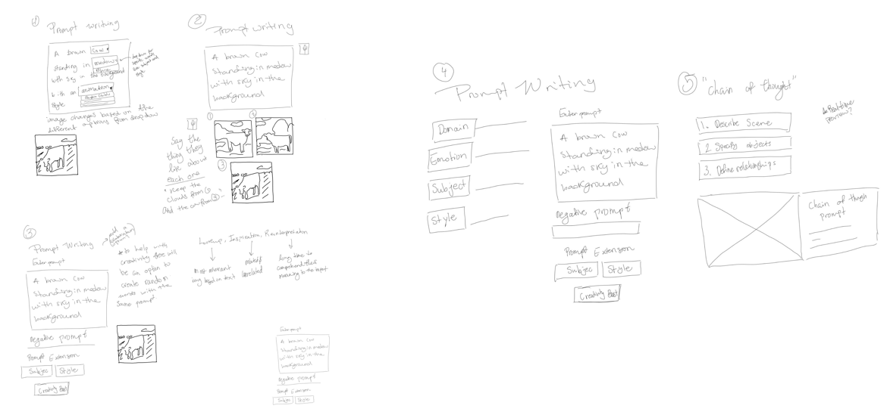
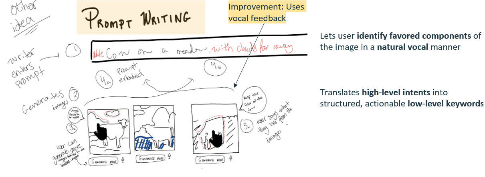
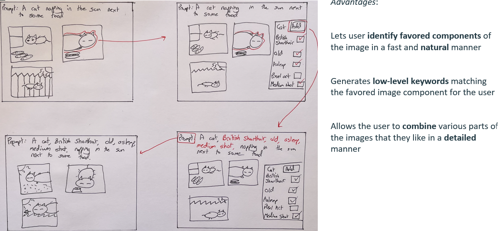
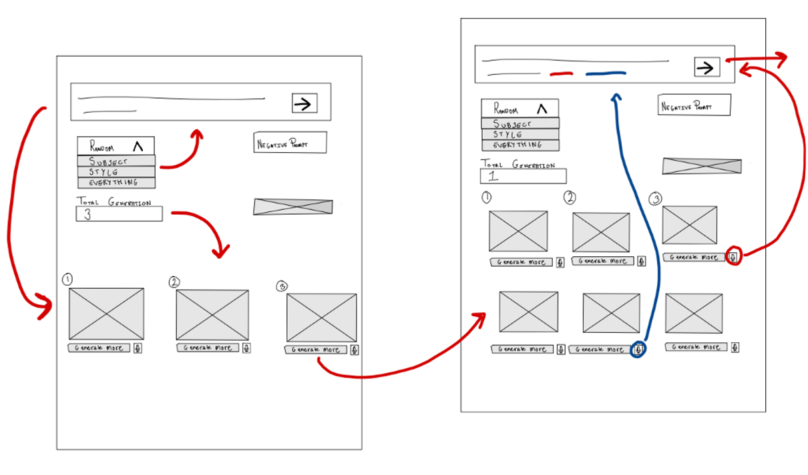
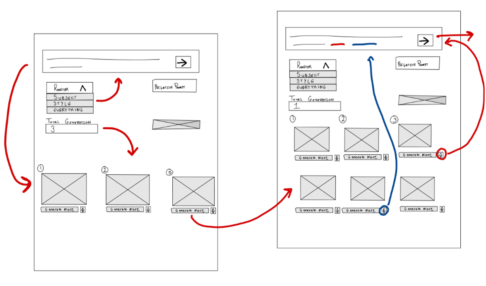

Prompt Engineering for AI Text-to-Image Generators


Mobile Application
January 2024 - March 2024
UX Designer, Researcher, Visual Designer
4 Designers
This project was for an upper division Design class at UCSD called Design for Creativity and Productivity. For this project we designed and prototyped an interactice system that adressed a probelm in productivity
AI models lack effective iterative feedback mechanisms that scale with user proficiency
"Given that the user has a well-formed intent, how can they interact with previously generated images to fine-tune the model to create what they want?
Given the broad nature of our problem space, we performed an exhaustive competitive analysis of over 3 related products.
| Competitors | Strengths | Limitations |
|---|---|---|
| GenAssist |
Accessible text-to-image generation system that simplifies image selection and generation for Blind and Low Vision Creators |
|
| Promptify |
Enhance text-to-image generation through interactive LLM system that suggests and refines prompts |
|
We each did low-fi sketches to brainstorm different ideas to adress the problem
 

After going through sketches from above we then selected ideas that we wanted to improve we selected the negative prompting feature and image component selection and further explored the idea and added more details to our skethes
 
We then created our wireframes from our different sketches
 


| Natural Language Feeback | Component Selection | Vocal Input Translation |
|---|---|---|
|
Isolated editable natural language statements help users develop mental model of the system |
Component selection allows user to specify intent during fine-tuning |
Translating natural utterances into specific, executable commands |
To recap, we created three different features that all try to bridge the gap between user intents and system output and encourage system understanding. We see that isolated editable natural language statements help users develop a mental model of how the system works. Component selection offers an intuitive way for users to specify what components of an image that they like or dislike, and vocal input allows us to translate our most natural form of language input into executable commands that the computer can understand accurately.
As these LLM models improve we’ll be able to achieve more and be able to perform even more complex text-to-image generation tasks. But if we continue to use natural language as a mode of input, we need to make sure that this increased complexity of the system is still able to connect with our basic intents. We believe that leveraging AI to encourage system understanding of these complex mechanisms will be very important in how these models will be able to keep this bridge of communication between user and system strong. Text-to-image generation models is just one small facet of natural language input. All programs that will take in natural language as input will have to find away to convey an effective mental model of their system for their end users. Furthermore, within text-to-image generation, we operated on two main assumptions: that the user already had a well-formed idea of what they wanted, and that images had already been created. Future research should look into how we can encourage creativity through prompt engineering, even before an initial batch of images is created.
However, within text-to-image generation, we operated on two main assumptions: that the user already had a well-formed idea of what they wanted, and that images had already been created. Future research should look into how we can encourage creativity through prompt engineering, even before an initial batch of images is created. How can we design effective interfaces that guide the user through prompt generation without constraining creativity?